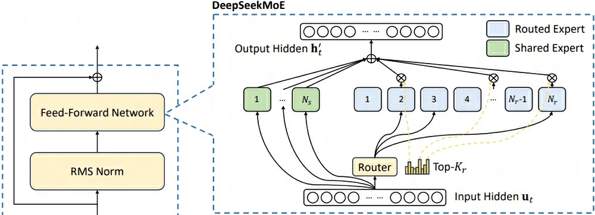

Deepseek
DeepSeekMath¶
论文：DeepSeekMath: Pushing the Limits of Mathematical Reasoning in Open Language Models
DeepSeek-AI & Tsinghua University & Peking University 2024 Feb
- 提出（PPO变种）GRPO强化学习方案提升模型对齐效果
主要内容¶
GRPO¶
{kind=link}
GRPO (Group Relative Policy Optimization)是PPO算法的一个变种，不再需要维护一个计算量需求巨大的价值模型输出baseline来计算样本优势，而是
{kind=link}
- 使用\(\pi_{old}\)对同一问题采样生成\(G\)个回答
- 根据RM输出对应的奖励分数
- 对奖励分数结果 \(\mathbb{R}^{G}\) 进行norm操作得到样本优势结果\(A_{i}\)
DeepSeek-1¶
论文：DeepSeek LLM Scaling Open-Source Language Models with Longtermism
DeepSeek-AI, 2024 Jan
主要内容¶
- https://152334h.github.io/blog/deepseek-1/
-
scaling laws
- of batch size and learning rate, and found their trends with model size
- of the data and model scale
- scaling laws derived from different datasets show significant differences
- choice of dataset remarkably affects the scaling behavior, indicating that caution should be exercised when generalizing scaling laws across datasets.
-
stages: 2 trillion tokens in Chinese and English for pre-training + 1 million instances for SFT + DPO
-
safety evaluation
Dataset¶
-
deduplication: deduplicating across 91 dumps eliminates four times more documents than a single dump method.

-
filtering: incorporating both linguistic and semantic evaluations
- remixing: address data imbalances, focusing on increasing the presence of underrepresented domains
- tokenizer:
- BBPE
- Pre-tokenization, prevent the merging of tokens from different character categories such as new lines, punctuation, and Chinese-Japanese-Korean (CJK) symbols
- split number into individual digits following llama
- vocab: 100000 + 15 special tokens + used for future → 102400
Architecture¶
micro
- replace pre-layer-norm with pre-rms-norm
- SwiGLU for FFN
-
GQA
-
replaced the cosine learning rate scheduler with a multi-step learning rate scheduler, maintaining performance while facilitating continual training. 1) 2000 warmup steps to maximum; 2) decrease to 31.6% after 80% training tokens; 3) decrease to 10% after 90% training tokens; 即warmup to maximum → maximum → 80% to 31.6% → 90% to 10%
- adjusting the proportions of different stages in the multi-step learning rate scheduler can yield slightly better performance.
- gradient_clip=1.0
-
The batch size and learning rate vary with the model size, illustrated in Table 2
-
Data parallelism, tensor parallelism, sequence parallelism, and 1F1B pipeline parallelism
- continuous batching in non-generative tasks to avoid manual batch size tuning and reduce token padding.
Scaling Laws¶
-
Scaling laws (Henighan et al., 2020; Hoffmann et al., 2022; Kaplan et al., 2020) suggest that model performance can be predictably improved with increases in compute budget 𝐶, model scale 𝑁, and data scale 𝐷
- N: model parameters
- D: number of tokens
- C: ≈6ND，6表示 1 forward + 2 backward + 3 update
-
IsoFLOP profile approach from Chinchilla
- our contributions and findings: 3项
- FLOPs/token，每处理一个token所需的浮点运算次数
- 嵌入层Embedding：映射操作，FLOPs/token=0
- 注意力层Self-Attention：1) QKC投影操作，\(3*d_{model}^2\)；2) 注意力权重矩阵，
n_head*d_head*seq_len=seq_len*d_model；3) softmax，分母部分求和 \(O(d_{model})\)；4) value加权，seq_len*d_model；5) O输出投影，\(d_{model}^2\) - 前馈网络FFN：
d_model → d_ff → d_model, 计算量为2*d_model*d_ff, 通常 FLOPs/token=\(8*d_{model}^2\) - LN：均值和方差 \(O(d_{model})\)，除操作是bitwise operation，FLOPs/token=\(2*d_{model}\)
- 残差连接：加法操作是bitwise operation，FLOPs/token=0
DeepSeek-2¶
论文：DeepSeek-V2: A Strong, Economical, and Efficient Mixture-of-Experts Language Model
DeepSeek-AI 2024 May
- MLA通过高效压缩K、V向量方式减少KV cache以提升训练和预测效率，并获得更好效果表现
- 部署模型前，对模型量化、压缩后，generation throughput 超过 50K token/s，prompt throughput 超过 100K token/s
主要内容¶
MLA¶
{kind=link}
MLA（Multi-head Latent Attention）与MHA机制类似，区别在于对Q、K、V向量进行了压缩，且将位置编码RoPE与压缩后的Q、K、V向量解耦
-
QKV向量低秩压缩，类似于LoRA中\(Wx=W^{U}W^{D}x\)
-
KV向量低秩联合压缩
\[ \begin{aligned} c_{t}^{KV} =& W^{DKV}h_t \\ k_t^C =& W^{UK}c_t^{KV} \\ v_t^C =& W^{UV}c_t^{KV} \end{aligned} \] -
Q向量低秩压缩
\[ \begin{aligned} c_{t}^{Q} =& W^{DQ}h_t \\ q_t^C =& W^{UQ}c_t^{Q} \end{aligned} \]
上标\(D\)表示降维，\(U\)表示升维
\(W^{UK},W^{UV}\in \mathbb{R}^{d_hn_h\times d_c}\)，\(W^{UQ}\in \mathbb{R}^{d_hn_h\times d_c^{'}}\) 且 \(d_c,d_c^{'} \ll d_hn_h\)
\(c\) 表示降维压缩后的缓存向量，\(C\)表示向量经降维、升维操作后的结果标志 -
-
位置编码RoPE解耦合，由于目的是cache压缩后的向量 \(c\)，如下对\(c\)升维后应用RoPE，
\[ \begin{aligned} \langle \text{RoPE}(W^{UQ}c^Q_t, m), \text{RoPE}(W^{UK}c^{K}_t, n) \rangle =& \big(c_t^Q\big)^T\big(W^{UQ}\big)^Te^{-im\theta} e^{in\theta}W^{UK}c_t^K \\ = & g(c_t^Q, c_t^K, n-m) \end{aligned} \]虽然依然能获取相对位置信息，但由于\(W^{UQ}\)与\(W^{UK}\)被旋转位置编码矩阵间隔，无法融合，因此每次计算\(\langle q, k \rangle\)会重新计算\(k=W^{UK}c^K_t\)，极大地阻碍了预测时的效率。为使MLA能兼容RoPE并提升效率，提出了对压缩后的Q、K、V向量解耦的方式额外注入位置信息。
\[ \begin{aligned} q_t^R \in \mathbb{R}^{d_h^{R}n_h} =& \text{RoPE}(W^{QR}c_t^Q) \\ k_t^R \in \mathbb{R}^{d_h^R} =& \text{RoPE}(W^{KR}h_t) \\ q_{t, i} =& [q^C_{t, i}; q^R_{t, i}] \\ k_{t, i} =& [k^C_{t, i}; k^R_{t}] \\ \end{aligned} \]- 计算\(k^R_t\)时使用\(h_t\)而不是使用\(c_t^{KV}\)只是一个直观上的选择，且由于不需要升维，选择前者效果更加合理
- 每个head各自拥有一个\(q_{t,i}^R\)，所有head共享一个\(k_t^R\)
- 目标是缓存需要升维的低维压缩结果\(c^{KV}_t\)，所以进行解耦并额外缓存无需升维的低维位置编码\(k^{R}_t\)
-
put all together，最终MLA的Attention计算过程为
\[ \begin{aligned} o_{t} =& \sum_{j=1}^t \text{Softmax}_j \bigg(\frac{q^T_{t}k_{j}}{\sqrt{d_h + d_h^R}}\bigg)v_{j}^C \\ = & \sum_{j=1}^t \text{Softmax}_j \bigg(\frac{[q^C_{t}; q^R_{t}][k^C_{j}; k^R_{j}]^T}{\sqrt{d_h + d_h^R}}\bigg)v_{j}^C\\ = & \sum_{j=1}^t \text{Softmax}_j \bigg(\frac{[W^{UQ}c^{Q}_t; \text{RoPE}(W^{QR}c^Q_t)][W^{UK}c^{KV}_j; k^R_t)]^T}{\sqrt{d_h + d_h^R}}\bigg)W^{UV}c^{KV}_j\\ u_t =& W^Oo_{t} \end{aligned} \]在预测时，可进一步缩减向量计算 \(W^{UQ}_{absorb} = (W^{UQ})^TW^{UK}\)以及\(W^O_{absorb}=W^{O}W^{UV}\)
-
KV cache对比，KV cache接近MQA，效果最强
-
效果对比，较MHA效果有明显提升，效果最强
{kind=link}
{kind=link}
DeepSeekMoE¶
{kind=link}

DeepSeekMoe在传统MoE的基础上将专家网络分为routed experts和shared experts，前者实现对输入token的专业化处理，后者用于减轻路由专家网络间的知识冗余。
topK操作后的路由专家网络权重\(g_{i, t}\)未softmax，在v3中进行了topK后softmax
由于模型训练的时候采用了并行技术，为防止专家网络激活路由坍塌，采用了以下辅助损失函数：
-
Expert-Level负载均衡，即在处理某一序列时，均衡各专家网络被激活的加权分数总和
\[ \begin{aligned} \mathcal{L}_{\text{ExpBal}} =& \alpha_1\sum_{i=1}^{N_r}f_iP_i \\ f_i =& \frac{N_r}{K_rT}\sum_{t=1}^T \mathbb{1}\text{ (Token }t\text{ selects Expert }i\text{)} \\ P_i =& \frac{1}{T}\sum_{t=1}^T s_{i, t} \end{aligned} \] -
Device-Level负载均衡，即在处理某一序列时，均衡各机器上各专家网络被激活的加权分数总和
\[ \begin{aligned} \mathcal{L}_{\text{DevBal}} =& \alpha_2\sum_{i=1}^{D}f_i^{'}P_i^{'} \\ f_i^{'} =& \frac{1}{\vert \varepsilon_i \vert}\sum_{j \in \varepsilon_i} f_j \\ P_i^{'} =& \sum_{j \in \varepsilon_i }P_j \end{aligned} \]路由网络被分成\(D\)组\(\{\varepsilon_1, \varepsilon_2, \dots, \varepsilon_D\}\)
-
Communicating负载均衡，即在处理某一序列时，均衡各专家网络组被激活的加权分数总和
\[ \begin{aligned} \mathcal{L}_{\text{CommBal}} =& \alpha_3\sum_{i=1}^{D}f_i^{''}P_i^{''} \\ f_i^{''} =& \frac{D}{MT}\sum_{t=1}^T \mathbb{1}\text{ (Token }t\text{ selects Expert }i\text{)} \\ P_i^{''} =& \sum_{j \in \varepsilon_i }P_j \end{aligned} \]与MoE类似，并行时最多激活\(M\)组专家网络
虽然DeepSeek模型采用了负载均衡策略，但依然会存在部分专家网络计算开销高于平均水平，因此需要对超负载的网络执行token-dropping 策略。
-
训练时从device-level执行token舍弃策略，即在超出计算负载的机器上，按所有网络激活权重分数从小到大舍弃token直到机器计算量处于负载范围内。
此外，还设计方案确保至少10%的训练数据不执行token舍弃策略
-
测试时，可基于效率和一致性考量是否要执行token舍弃策略
Inference Speedup¶
- 将所有参数量化为FP8精度类型
- 进一步对KV cache进行量化，压缩后平均大小为 6-bit
训练：
- full pre-trained on 8.1T tokens(DeepSeek 67B corpus + Chinese Data + higher quality data)
- 1.5M conventional sessions with various domains such math, code, writing, reasoning, safety, and more to SFT DeepSeek-v2 chat
- follow DeepSeekMath to employ Group Relative policy Optimization(GRPO) to align model with RLHF
模型架构：
- DeepSeek-V2
- DeepSeek-V2-Lite
- DeepSeek-V2-Chat_SFT
- DeepSeek-V2-Chat_RL
策略：
- Token-Dropping Strategy: In this way, we can flexibly decide whether to drop tokens during inference according to the efficiency requirements, and always ensure consistency between training and inference.
-
R1中的reward model和v2中的不相同，实际上是一个rulee-based system
-
HAI-LLM framework
数据处理： 1. Data Construction 2. BBPE（Byte-level Byte-Pair Encoding）
-
MTP: 类似于skip-gram，t预测t+1, t+2, ..., t+k
-
low-precision training
DeepSeek-3¶
主要内容¶
- 共享专家与专业专家数量都乘以了m倍，为保持参数量不变，intermediate hidden state dim也需要1/m
MoE Load Balance Loss-free¶
MTP¶
{kind=link}
MTP (Multi-Token Predictoin)，基于当前token一次性预测未来\(D\)个位置的token。如上图所示，通过上一时序的隐层信息与当前状态的token_embedding输入，预测下一时刻的token，即：
- \(MTP_1\)输入信息为\(\text{cat}\big([t_1], \text{emb}(t_2)\big)\)，预测\(t_3\)
- \(MTP_2\)输入信息为\(\text{cat}\big([t_1, t_2], \text{emb}(t_3))\)，预测\(t_4\)
- \(MTP_k\)输入信息为\(\text{cat}\big([t_1, t_2, \dots, t_{k-1}], \text{emb}(t_k)\big)\)，预测\(t_{k+1}\)
- \([t_1, \dots, t_k]\) 表示了整合了\([1, t]\) tokens的\(MTP_{k-1}\)输出（\(MTP_0\)为main model），本质上依然保留了时序链
- \(\mathcal{L} = \mathcal{L}_{main} + \frac{\lambda}{D}\sum_{i=1}^{D}\mathcal{L}_{MTP}^k\)
- 在测试时可直接使用main model进行正常文本生成，也可基于提升文本生成效率考量，使用MTP网络快速生成邻近token